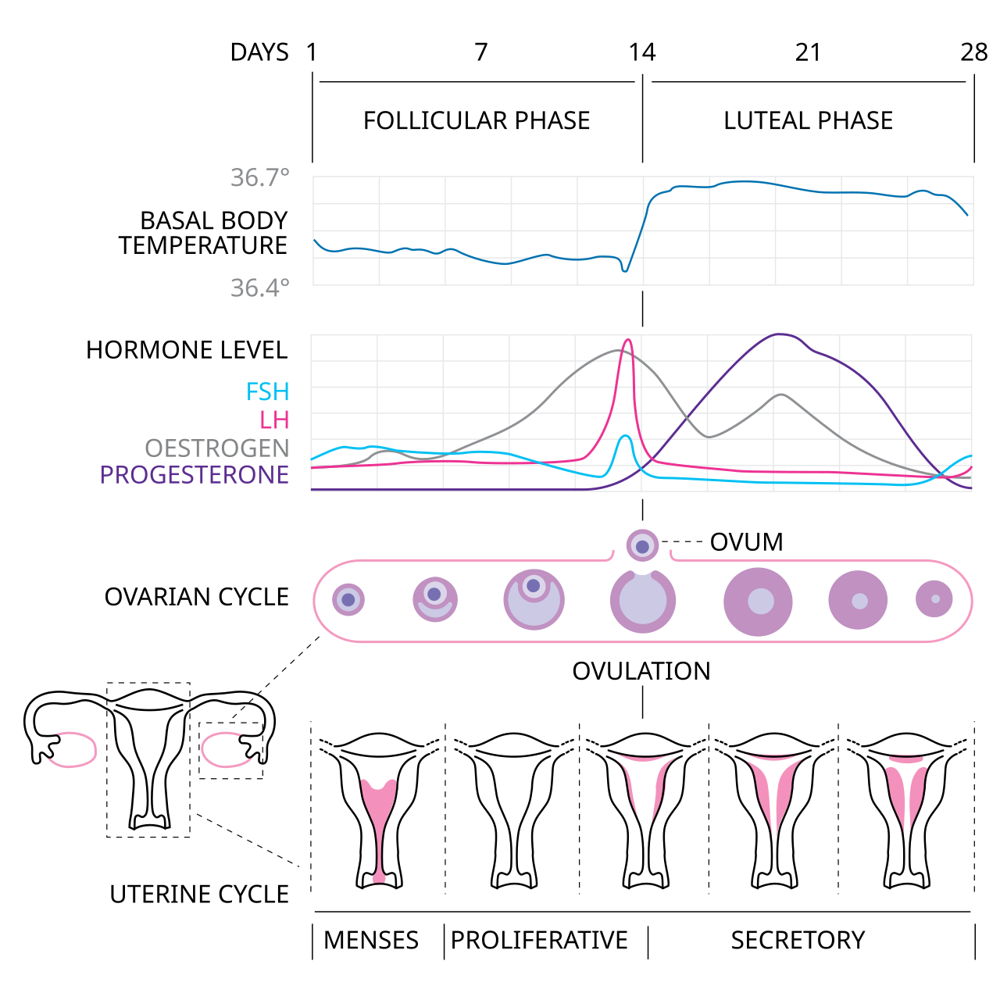

Nhiệt Độ Cơ Bản (BBT) Là Gì—Và Vì Sao Nó Lại Thay Đổi Theo Chu Kỳ?
Nhiệt độ cơ bản của cơ thể (Basal Body Temperature — BBT) là mức nhiệt độ thấp nhất của cơ thể khi nghỉ ngơi hoàn toàn trong chu kỳ 24 giờ, đạt được trong giai đoạn ngủ sâu không bị gián đoạn. Hơn một thế kỷ qua, các bác sĩ nội tiết sinh sản đã phát hiện ra rằng đường cong nhiệt độ của phụ nữ trong một chu kỳ có rụng trứng không hề phẳng—mà mang hình thái hai pha (Biphasic) rõ rệt.
Động lực nào điều khiển công tắc nhiệt độ hàng tháng này? Đó là cuộc đối đầu trực tiếp giữa hai hormone buồng trứng tác động lên vùng trước thị của dưới đồi trước (Anterior Hypothalamus)—trung tâm điều nhiệt tối cao của não bộ:
1. Hiệu Ứng Làm Mát Ở Pha Nang Trứng (Do Estrogen): Trong nửa đầu chu kỳ (từ khi hành kinh đến trước khi rụng trứng), Estradiol chiếm ưu thế. Estradiol hạ thấp điểm đặt nhiệt độ (Set-point) tại vùng dưới đồi và tăng cường giãn mạch ngoại vi để tản nhiệt, giữ nhiệt độ ban đêm của bạn ở vùng nền thấp—thường nằm ở mức −0.1°C đến −0.3°C dưới mức trung bình tháng (khoảng 36.1°C đến 36.4°C khi đo ở miệng).
2. Hiệu Ứng Sinh Nhiệt Ở Pha Hoàng Thể (Do Progesterone): Trong vòng 24 giờ sau khi trứng trưởng thành phóng thích, vỏ nang trứng vỡ biến đổi thành Hoàng thể (Corpus Luteum) và bơm lượng lớn Progesterone vào máu. Progesterone tác động trực tiếp lên các nơ-ron nhạy cảm nhiệt tại vùng dưới đồi, đẩy "nhiệt kế trung tâm" của cơ thể tăng vọt thêm +0.3°C đến +0.5°C (+0.5°F đến +0.9°F) và duy trì suốt 11 đến 14 ngày tiếp theo.

Cảm Biến Nhiệt Độ Da Liên Tục Trên Thiết Bị Đeo So Với Nhiệt Kế Đo Miệng Truyền Thống
Trước đây, để theo dõi BBT, bạn buộc phải thức dậy vào đúng một giờ cố định mỗi sáng—trước cả khi ngồi dậy, uống nước, nói chuyện hay cầm điện thoại—để ngậm nhiệt kế điện tử 2 chữ số thập phân dưới lưỡi. Chỉ cần cuối tuần bạn ngủ nướng thêm 90 phút, hoặc thức dậy lúc 4 giờ sáng đi vệ sinh, kết quả đo sáng hôm đó sẽ bị sai lệch hoàn toàn.
Các thiết bị đeo thông minh thế hệ mới—dẫn đầu bởi Oura Ring (tích hợp trực tiếp với thuật toán được FDA chứng nhận của Natural Cycles°), Apple Watch (cảm biến nhiệt độ cổ tay kép), Garmin và WHOOP—đã tạo ra cuộc cách mạng khi thay thế phép đo đơn lẻ buổi sáng bằng công nghệ lấy mẫu nhiệt độ liên tục suốt đêm:
| Tiêu Chí So Sánh | Nhiệt Kế Đo Miệng BBT Truyền Thống Khi Thức Dậy | Cảm Biến Nhiệt Độ Da Ban Đêm (Oura / Apple Watch / WHOOP) |
|---|---|---|
| Tần Suất Lấy Mẫu | 1 lần đo duy nhất mỗi buổi sáng ngay khi mở mắt | Đo mỗi 5 đến 60 giây suốt đêm (hàng trăm điểm dữ liệu mỗi giấc ngủ) |
| Độ Chính Xác Cảm Biến | ±0.05°C đến ±0.10°C (rất dễ sai số nếu thở bằng miệng khi ngủ) | Nhiệt điện trở NTC chính xác tới 0.01°C – 0.02°C (Apple Watch dùng cảm biến kép dưới da + ngoài vỏ để trừ nhiệt độ chăn đệm) |
| Độ Nhạy Với Giờ Thức Dậy | Sai số cao: Dậy muộn hơn 1 giờ làm nhiệt độ miệng tăng giả tạo khoảng ~0.1°C | Bền bỉ: Thuật toán trích xuất phân vị nhiệt độ ổn định nhất trong pha ngủ sâu bất kể giờ báo thức |
| Cách Hiển Thị Trên App | Con số nhiệt độ tuyệt đối (ví dụ: 36.32°C so với 36.68°C) |
Độ Lệch So Với Đường Cơ Sở Cá Nhân (ví dụ: −0.2°C ở pha Nang trứng so với +0.4°C ở pha Hoàng thể) |
Trong nghiên cứu kiểm chứng y sinh công bố trên BMC Women's Health (Maijala et al., 2019) và nghiên cứu tại Đại học UC San Diego (Smarr et al., 2020), các nhà khoa học đã đối chiếu nhiệt độ da ngón tay ban đêm từ Oura Ring với nhiệt kế đo miệng BBT và que thử rụng trứng LH. Kết quả cho thấy nhiệt độ da đo liên tục ban đêm phát hiện bước nhảy nhiệt hai pha với tỷ lệ tín hiệu trên nhiễu (Signal-to-Noise Ratio) rõ nét hơn hẳn nhiệt kế đo miệng thủ công, xác nhận chính xác sự dịch chuyển pha hoàng thể trong >96% chu kỳ có rụng trứng.
Cách Đọc 4 Cột Mốc Trên Biểu Đồ Nhiệt Độ Hàng Tháng Của Bạn
Khi mở biểu đồ Nhiệt độ chu kỳ (Cycle Insights hoặc Wrist Temperature) trên ứng dụng, hãy tìm 4 cột mốc sinh lý sau:
- Thung Lũng Pha Nang Trứng (Ngày 3 đến ~Ngày 13): Các cột nhiệt độ nằm ổn định bên dưới đường cơ sở
0.0°Ccá nhân của bạn (−0.1°C đến −0.35°C). - Đáy Hạ Nhiệt Trước Rụng Trứng (Tùy chu kỳ, Ngày 12–14): Ngay khi Estradiol đạt đỉnh cực đại sát thời điểm rụng trứng, nhiều người dùng quan sát thấy nhiệt độ chạm đáy thấp nhất tháng (
−0.3°C đến −0.4°C) trong 1 đêm trước khi bật tăng mạnh. - Quy Tắc Xác Nhận "3 Cao Hơn 6" (Ngày ~15–18): Trong y học sinh sản và thuật toán Natural Cycles, rụng trứng được xác nhận chính thức khi 3 đêm liên tiếp có nhiệt độ cao hơn ít nhất +0.2°C đến +0.3°C so với mức cao nhất của 6 đêm pha Nang trứng liền trước đó.
- Tín Hiệu Cuối Chu Kỳ (Ngày 27–28 hoặc 14+ ngày sau rụng trứng):
- Nếu không mang thai: Hoàng thể tự thoái hóa sau 12–14 ngày, Progesterone sụt giảm và nhiệt độ ban đêm rơi về đường
0.0°Ckhoảng 1 đến 2 ngày trước khi kỳ kinh bắt đầu. - Nếu quá trình thụ thai thành công: Hormone thai kỳ hCG sẽ duy trì hoạt động của hoàng thể, giữ Progesterone ở mức cao. Nhiệt độ trên thiết bị đeo sẽ tiếp tục duy trì ở mức cao (+0.3°C đến +0.6°C) suốt 16 đến 18+ ngày liên tiếp sau rụng trứng—thường là dấu hiệu sinh trắc học báo tin vui sớm nhất!
Kinh Nghiệm Thực Tế: Điều Gì Có Thể Làm Nhiễu Đường Cong Nhiệt Độ?
Vì thiết bị đeo đo sự điều hòa nhiệt ngoại vi, các thuật toán thông minh (như Natural Cycles và Oura) sẽ tự động lọc bỏ các đợt tăng nhiệt không phải do hormone—nhưng bạn cũng nên nắm rõ các tác nhân phổ biến này:
- Uống Rượu Bia Buổi Tối (Tăng đột biến +0.3°C đến +0.8°C): Uống từ 2 đơn vị cồn trở lên gây giãn mạch ngoại vi và tăng sinh nhiệt chuyển hóa tại gan suốt đêm, tạo ra một cột nhiệt độ tăng vọt (+0.5°C) trong 1 đêm kèm RHR nhảy thêm +8 đến +15 bpm. Hãy luôn gắn thẻ (Tag) những tối có uống rượu bia để ứng dụng không nhầm lẫn đó là ngày rụng trứng!
- Dấu Hiệu Sắp Ốm Hoặc Sốt Nhẹ (Tăng +0.6°C đến +1.5°C): Như nghiên cứu TemPredict của UCSD (Smarr et al., 2020) đã chỉ ra, nếu nhiệt độ da ban đêm tăng vọt +0.7°C trở lên đi kèm nhịp thở tăng (+2 nhịp/phút), đó thường là phản ứng miễn dịch chống virus chứ không phải mức tăng +0.3°C nhẹ nhàng của pha Hoàng thể.
- Chu Kỳ Không Rụng Trứng (Biểu Đồ Một Pha Phẳng): Nếu nhiệt độ dao động lên xuống ngẫu nhiên suốt tháng mà không tạo thành cao nguyên nhiệt độ cao kéo dài 10–14 ngày trước kỳ kinh, nhiều khả năng bạn đã trải qua một chu kỳ không rụng trứng (Anovulatory cycle). Có 1 chu kỳ không rụng trứng mỗi năm (thường sau đợt căng thẳng lớn hoặc bay lệch múi giờ) là bình thường, nhưng nếu lặp lại thường xuyên, bạn nên kiểm tra hội chứng buồng trứng đa nang (PCOS), tuyến giáp hoặc tình trạng thiếu hụt năng lượng khi tập luyện (RED-S).
3 Nguyên Tắc Vàng Để Đo Nhiệt Độ Đêm Chính Xác Tuyệt Đối
- Đeo Nhẫn Hoặc Đồng Hồ Ôm Vừa Khít Mỗi Đêm: Với Apple Watch hoặc Garmin, hãy thắt dây vừa vặn để mặt cảm biến áp sát da cổ tay mà không bị trượt qua mắt cá tay. Với Oura Ring, hãy đeo ở ngón trỏ hoặc ngón giữa với kích cỡ vừa khít.
- Kiên Nhẫn Cho Thiết Bị 30–60 Đêm Hiệu Chuẩn Ban Đầu: Khi mới sử dụng thiết bị đeo, cảm biến cần khoảng hai chu kỳ kinh nguyệt hoàn chỉnh để thiết lập chính xác đường cơ sở
0.0°Criêng biệt của cơ thể bạn. - Kết Hợp Nhiệt Độ Đêm Với Que Thử LH Để Định Vị Toàn Diện: Hãy nhớ nguyên tắc vàng của sinh lý học sinh sản: Que thử LH và dịch nhầy cổ tử cung giúp dự báo rụng trứng trước 24–48 giờ; nhiệt độ ban đêm trên thiết bị đeo giúp xác nhận rụng trứng sau 24–72 giờ. Kết hợp cả hai mang lại bức tranh 360 độ hoàn hảo về chu kỳ của bạn.
Tài Liệu Tham Khảo & Nguồn Y Khoa
- Maijala, A., Kinnunen, H., Koskimäki, H., Jämsä, T., & Kangas, M. (2019). Nocturnal finger skin temperature in menstrual cycle tracking: ambulatory pilot study using a wearable Oura ring. BMC Women's Health / JMIR, 19(1), 150. https://pubmed.ncbi.nlm.nih.gov/31783840/
- Bull, J. R., Rowland, S. P., Scherwitzl, E. B., Scherwitzl, R., Danielsson, K. G., & Harper, J. (2019). Real-world menstrual cycle characteristics of more than 600,000 menstrual cycles. npj Digital Medicine (Nature), 2(1), 83. https://pubmed.ncbi.nlm.nih.gov/31482137/
- Steward, K., & Raja, A. (2023). Physiology, Ovulation And Basal Body Temperature. In StatPearls [Internet]. National Center for Biotechnology Information (NCBI). https://www.ncbi.nlm.nih.gov/books/NBK546686/
- Natural Cycles° Medical Science. How Basal Body Temperature & Wearable Algorithms Detect Ovulation. https://www.naturalcycles.com/the-science